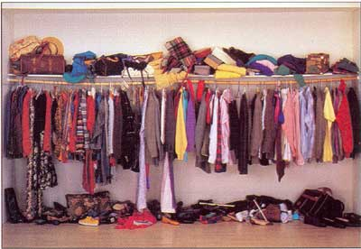

| You're on the first page. | New Search | You're on the last page. |
Last week I've prepared the Semantic Analysis lecture for the Compiler Construction course. In the process I've found the Genesis of Attribute Grammars article by Donald Knuth in which he talks about Attribute Grammars and the way the idea crystalized for him and the research community.
In a paper which has a sense of history embedded in it, Knuth quotes some of the researchers attending a conference on programming language semantics. I was hooked on the passion with which the pioneer computer scientists were trying to understand and define the problems of the time.
It reminded me of the NATO Software Engineering Conference proceedings which also has this feeling of experts gathering and working together to solve a big problem. We need more of that nowadays.
Do you remember what happened to your closet when you managed it based on the policy “Is there a chance that I will wear this in the future?”. In a context of abundance a much better closet management criteria is: “I really love and want this”.

It is the same with your life, career, projects argues the Disciplined Pursuit of Less essay on Harvard Business Review.
I think academia is a particularly relevant domain here. As an academic you get to choose with whom you collaborate, on what projects you work, which students you supervise, in what PC’s you participate, what conferences you attend, etc. The options are most of the times limited by your imagination. And the scarce resource of time.
I have accepted being a PC member for OOPSLA in my portfolio of projects for next year. That is going to require two weeks of my spring; then there will be a PC meeting far far away. With Oscar we have decided to organize SATToSE 2013 in Bern, another project in my portfolio. The organization and attendance for workshop will require another two weeks of dedication. There I go, I have pledged a tenth of my 2013 before it even started!
When managing our personal project portfolios in an ambient of abundance, we must follow the advice of HBR: not just haphazardly saying no, but purposefully, deliberately, and strategically eliminating the nonessentials.
In November I have presented with Romain Robbes our paper on API Deprecation at FSE 2012 in North Carolina. I upload here the slides of the presentation:
I started the presentation discussing how in real-life ecosystems changes in one part of the ecosystem can have far-reaching impact in other parts. I used the illustration from the Long Now Seminar by Stephen Lansing Perfect Order: A Thousand Years in Bali
In our paper we show that indeed, some deprecations in a given project in a Software Ecosystem can impact hundreds of other projects and developers.
I have been invited to serve on the PC of OOPSLA 2013. Although there will be probably a lot of work, I can not say no to such an honor.
I always liked competitions. In fact, when I started doing research I had a hard time understanding the conference system: “There is no ranking of the papers that are submitted? You just divide them in two piles: the accepted and rejected? But what's the incentive for the people to participate then?“. I guess my amazement was due to the educational system which formed me: in Romania we always encouraged competition and ranking. In school the best three students in every class would get prizes and the next three would get special mentions; the best in a given discipline would participate in ...Olympiads“ in which the aim was to rank as high as you could and in which the ranking was always made public and a matter of pride for the individual and institution; in university the results of the exams were publicly displayed: sometimes the lists were sorted alphabetically, sometimes in based on the grade.
So maybe this is why when we were thinking about the project for the Software Design and Evolution course at the University of Bern (co-taught with Oscar Nierstrasz), I wanted to have a competition. I thought it would make people work better since they will be part of a competition. But in order to have a ranking, you need a metric for the objective evaluation of each project. And in my experience, the software engineering and software analysis projects are not easily ranked. Or when they are ranked, it is more the ranking of a beauty pageant than the ranking of a sprint contest. And I wanted the ranking to be of the latter kind. And on top of that, the solution to the problem-project should involve and combine as many techniques as possible from the palette that we were going to talk about about in the course. This were the requirements for the problem of the Software Evolution Cup.
We eventually settled on The Dead Code Detector project. The idea is inspired by the observation that usually, the size of the code in a project is monotonically increasing: code gets always added, but it rarely gets deleted; even if often references to individual methods or classes are removed during its evolution, the referenced artifacts still remain in the code base. With time, nobody knows why they are there but nobody dares to remove them either. Having a system that would detect potential dead code would be useful for keeping the code base clean.
Some simple situations can be detected by the most advanced IDE's: eclipse highlights fields that are not used, and even functions that are never called. The problem is not trivial though: functions might be called from other projects, two functions that mutually call each other might become dead for the rest of the project, etc. Moreover, a function which might seem to be unreferenced during static analysis might be called through reflection at runtime. In a way, the dead code detector would be a Static Garbage Collector for the source code.
This project allowed us to rank the students with the following ranking function: each team would get a accuracy score equal to the number of lines of code correctly detected as dead code minus the number of lines of code incorrectly detected. In order to reduce our work, we would only consider their top 10 recommendations for the score calculation. With this scoring we could have a ranking for the Software Evolution Cup but we could also grade the project based on its architecture and ingenuity for the final grade independently of the cup ranking. Two rabbits with a single bullet :)
The Software Evolution Cup / SDE Project took the next to the last four weeks of the SDE course. We timed it in such a way that in each of the weeks, during the lecture, we introduced a new analysis technique that was directly relevant for the project: static analysis, dynamic analysis, multi-version analysis, ecosystem analysis. At the end, we were pleasantly surprised to see that the winner project had combined all the four techniques we presented. Indeed, the techniques proved as we expected to be complementary:
The project was successful; we ranked the students and we had a clear winner. When deciding the winner we realized that the ranking has one drawback: we liked more than one project, and we almost felt bad for having to declare a single winner: Olivier Flückiger. Besides his project, there were several others that we liked but if we would have offered prizes for all, almost half the people would have been awarded a prize.
The project was not perfect and we also had some lessons to learn.
I am still not sure whether the competition context influenced the behavior of the students. I sure it did not demotivate them, and after all we were pleasantly surprised by their overall enthusiasm.
We are now thinking about the problem for the next Software Evolution Cup.
CSMR 2012 will happen in Szeged next year.
This fall we will be teaching with Oscar the Software Design and Evolution lecture at the University of Bern. We will design the course from scratch later this year. This should be fun!
Because last year’s tool demos were interesting…
Lile Hattori’s article on the study of the usefulness of the Eclipse Replay plugin for program understanding was accepted for ICPC . I’ll put up a link to the paper once the camera ready version is available.
The symposium is dedicated to presenting and discussing original work on subjects related to the disciplined evolution of large-scale Web-based systems.
I’ve just added my thesis to the list of Software Evolution Theses related to the EVOL programme at: http://wiki.ercim.eu/wg/SoftwareEvolution/index.php/Theses.
There is also an ACM SIGSOFT page on Software Engineering theses at: http://www.sigsoft.org/phdDissertations/
Could not resist the invitation of Romain Robbes and Anthony Cleeve.
I’ve been invited and I have accepted to Review two articles for Journal of Systems and Software.
I accepted the invitation and will be Tool Demo Chair for WCRE 2011. The conference will happen in Israel Ireland this year, so I must get at least an article in! The deadline is 27 of June.
Today, Lile Hattori is in Bern to run a controlled experiment for the Replay plugin with volunteers from SCG.
Replay is a cool Eclipse plugin that supports the chronological replay of changes as they were performed by developers. See more in our Paper: Replaying Past Changes in Multi-Developer Projects.
I’ve just accepted the invitation to be PC member of the IWSECO’11, the only workshop on software ecosystems there is nowadays. It is organized by Jan Bosch, Slinger Jansen and Co.
Between mid-november and mid-december I have been visiting researcher at the PLEIAD Lab at the University of Chile. I gave a master lecture, talked to various people including Romain Robbes, Eric Tanter, Alex Bergel, Johan Fabry, and closely worked with Romain Robbes with whom we submitted a paper to ICSE NIER. A pleasant and productive time!
The effect of Twitter on college student engagement and grades is an interesting article. It shows through a controlled experiment that using Twitter can enhance the engagement of the students.
In ‘87, Chickering and Gamson proposed 7 principles for good practice in undergrad education: four which I consider the most important are (1) communicate high expectations, (2) foster cooperation between students, (3) student/faculty contact, and (4) provide prompt feedback.
Reading the article one realizes that the faculty performing the study used Twitter to support exactly these requirements. One thing that was obvious from the article is that the faculty were dedicated to invest much more time and continuously monitor the Twitter activity.
The article reminded me of the first years of programming fundamentals group projects at the University of Lugano where we saw students being really engaged. The more I think about it, the more I realize that we had all the 4 principles covered:
The morale for me? Technology (e.g. twitter) can help when there is dedication, but dedication alone will also do.
Last week I gave a lecture at the PL Summer School in Antofagasta Chile. It was fun to see several of the people in the audience very attentive all throughout the presentation and also have a good interaction. I will post the slides soon.